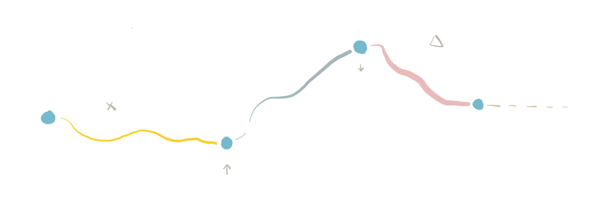

Creating your own UX career mapThe following is a copy of an interview with Molly Jennings from Few & Far, as part of a Design Chat, a series of short interviews with Design Leaders talking about all things design.
Link to the original article here
Meet José Daniel Ardila, the UX Lead at Amsterdam-based MediaMonks - a creative production company that produced 131 Cannes Lions and 250+ FWAs to date. José has worked for different companies - big and small and more recently in digital agencies doing consultancy work (although admitting that most people are not calling it that). With time, his role has expanded from designing to helping other designers with their career path and overseeing project teams to deliver great work, and hopefully, have fun in the process.
Originally from Venezuela, now living in Amsterdam, José is hoping that sharing his experience might help others who are struggling with figuring out what to do next.
What is your advice for people starting out? What would be a good place to work?
This is a question I’ve gotten recently, more in the form of “Should I work for an agency or a startup? Should I try to land a job in a big corp?” and I tried to summarise my answer in three factors: the work, guidance and team.
When you are starting out, what you look for is to start getting hands on experience. Start learning by doing, moving from the things you have learned as an ideal process to the constraints and challenges of real life. That also means that you should aim for a place where you have enough room to make mistakes, try different things and grow.
You should also consider who is going to oversee your work, who you will be reporting to and how much time they will have to invest in your growth.
Finally, who your team will be and most importantly what spaces will you have to learn from them, will you work together in the same projects? Consider how much knowledge sharing and interaction you will have on a daily basis.
Try to answer those three, no matter if you are looking at an agency or a product company.
What can you tell people who would like to take the next step in their careers, who are feeling stuck and don’t know how to keep progressing?
The most common mistake I’ve seen people make at this stage is trying to land their next title by ticking boxes, filling this magical list of things that are required to be a “senior” (or whatever other title you might be chasing). A senior role can require different skills depending on the place you work.
The first thing to understand is that this is not a race, a lot of people feel they should have a senior role after a couple of years on the job. There is this feeling of having all that it takes after working for “Evil corp” or “Fruit company X”. I have suffered this pressure myself, and the thing that helped the most was to look for opportunities that allowed growth and worrying about titles later.
Consider what the project that will allow you to develop new skills or keep building on your strengths.
“Look for opportunities that allow growth and worry about titles later”
Don’t get me wrong, you might be growing at high pace, and by all means push for that title if you think you deserve it, but make sure to ask for feedback, understand what is required at the next level and make your case by knowing what it means for you.
How to choose my next step? Management or individual track? Are there other options?
There will be a moment where we are presented with this question, or confronted with it for the sake of improving our conditions, to keep moving up in the ladder. How do you know which way is the right way?
Making a switch to a management path is a big change, the skills you need to have are different, and you might find yourself moving away from hands on design work. Companies sometimes make the mistake of making their more senior people managers, and everyone suffers for it, they lose their best designer and the team is stuck with someone that can’t manage others.
If you really love being hands on, try looking for a next step in the individual contributor path. If it doesn’t exist in your company, propose to create it. Why not? The worst that can happen is they say no.
If you do not know which route would be the best fit for you, I suggest you tackle this as a design problem. Interview others that are currently doing the job. What does their day look like? What do they enjoy the most? Do you see yourself doing those things? Or not doing what you are doing today?
Try to do some of the tasks yourself, ask for a project, or “stretch assignment”, cover for them in their vacations, or offer to help out for some time. Try it on and see if it fits. I have tried this in the past, and what’s best is it gives you the chance to understand what the job entails without the pressure of having all the responsibility.
Finally, consider alternatives. Creating digital products is a specialised business, which means there are tons of other paths to explore: UX Writing, UX Research, Service Design, Front-end design, Product management. The list is endless. Don’t be afraid to try alternate routes, these are reversible decisions, you don’t have to run and immediately change your twitter bio. Experiment, learn about yourself and pursue the path that you enjoy the most, or that works the best for your abilities.
“Creating digital products is a specialised business, which means there are tons of other paths to explore”
Closing thoughts
There is no map, of course there is a landscape, a playing field that you should be familiar with, but there is no one way to move forward, you can build new roads along the way. Every person is different, growth happens at different pace, and opportunities come along in different moments (or don’t come, and you have to make your own). Give yourself permission to experiment and design the next steps in your career.